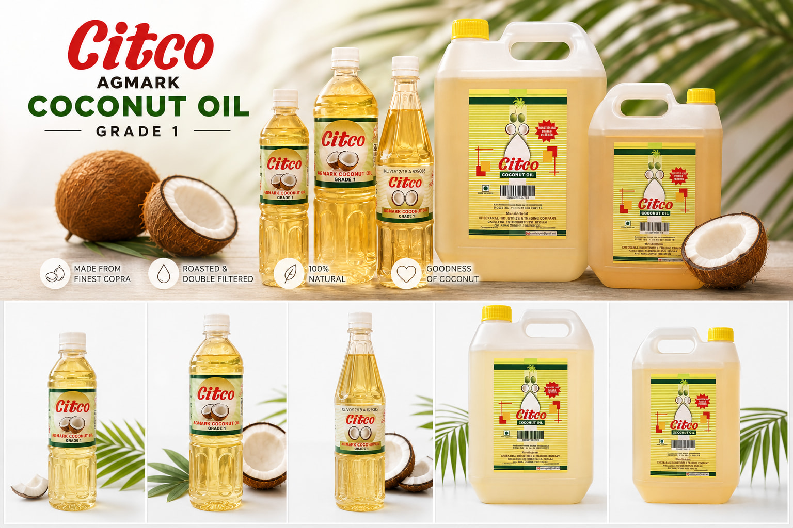

About Us
Our Story
Cheekanal Industries and Trading Company (CITCO) has been producing premium coconut oil since 1954. We are a third-generation family-owned business preserving traditional Kerala manufacturing practices.

Cheekanal Industries and Trading Company (CITCO) has been producing premium coconut oil since 1954. We are a third-generation family-owned business preserving traditional Kerala manufacturing practices.
Mission & Values
Mission: To provide pure, healthy and authentic coconut oil manufactured using trusted traditional processes while maintaining high standards of quality.
- Purity
- Trust
- Heritage
- Quality
- Customer Commitment